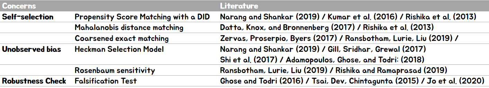

ETC
Literature Review 커뮤니케이션 - 공저자를 위한 방식으로 일을 해라
참고로 아래 내용은 2020년 5월 8일 후배들에게 보낸 메일을 일부 발췌했다.
보따리상처럼 자기가 찾아온 내용물을 펼쳐두고 상대에게 알아서 이해하라는 건 '조금' 곤란하다
방법
1) 처음에는 Broad하게 시작한다. 우리 주제와 왜 연관이 있는지 코멘트를 붙여두었다.
초기작업 당시 word 파일을 열어보았다. 당시 우리는 똑똑한 기술이 사람들에게 똑똑해지는 것을 방해하는 의도하지 않은(Unintended) 효과에 대해 찾고 있었다.
Sparrow, B., Liu, J., & Wegner, D. M. (2011). Google effects on memory: Cognitive consequences of having information at our fingertips. Science.
--> External memory에 관련한 Science 키 논문
Barr, N., Pennycook, G., Stolz, J. A., & Fugelsang, J. A. (2015). The brain in your pocket: Evidence that Smartphones are used to supplant thinking. Computers in Human Behavior
--> 스마트폰을 많이 쓰는 사람일수록 Analytical thinking도 주는데, 저자들이 주장하기를… “people may offload thinking to technology”
De Guinea, A. O., & Markus, M. L. (2009). Why break the habit of a lifetime? Rethinking the roles of intention, habit, and emotion in continuing information technology use. Mis Quarterly
--> "Although leading IS authorities on continuing IT use tend to emphasize conscious intention formation (influenced both by cognition and emotional responses), they are well aware that some or much continuing IT use may be habitual. Habit is portrayed by these authorities as a well-learned action sequence, originally intentional, that may be repeated as it was learned without conscious intention"
이렇게만 기록하여 테마별로 15편 정도 내가 중요하다고 생각하는 논문을 적어두었는데, 실제로 필요한 부분의 Reference로 사용되기도 했다.
Sparrow의 Science 페이퍼의 경우 주제를 관통하는 중요한 논문이라고 생각해서 일부러 긴 코멘트를 놔두지 않고 가장 앞단에 두었던 것으로 기억
2) 방법론을 처음 시작한 경제나 통계 등에서 직접 인용을 하는 것도 좋다. 그렇지만 조금 더 알아보자

내가 사용하는 이 방법론이 내가 연구하는 영역에서도 누군가 먼저 가져다 썼을 것이다.
정리해서 좋은 저널에서 어떤 저자들이 어떤 논문에서 사용했는지 볼 수 있게끔 시각화해서 두었었다.
이걸 보는 공저자는 여러분이 정리해 둔 폴더에 들어가 저자의 이름만 검색하면 그 논문이 무엇인지 바로 찾아볼 수 있다.
3) 강조를 적절히 석어준다.
논문을 여러개 찾아두어도, 그 중에는 더 주목 했으면 좋은 저널들이 있기 마련이다.
내가 했던 방식은 아래 설명
Karlan, D., McConnell, M., Mullainathan, S., and Zinman, J. (2016). Getting to the top of mind: How reminders increase saving. Management Science
⑴ Main focus : Saving behavior
⑵ Monthly reminder. (Not repetitive), had its desired effects
“We also speculate that the frequency and source of attention shocks plays an important role. Attention may interact with habit formation; e.g., if reminders to save induce consumers to adopt pro-savings routines. Conversely, some consumers may eventually “tune out” repeated reminders."
Thaler, R. H. (1999). Mental accounting matters. Journal of Behavioral decision making, 12(3), 183-206.
Psychophysics implies that the $50 will appear larger by itself than in the context of a much larger bill, and in addition when the bill contains many items each one will lose salience. The effect becomes even stronger if the bill is not paid in full immediately.
Although an unpaid balance is aversive in and of itself, it is difficult for the consumer to attribute this balance to any particular purchase.
이번에도 어떻게 마무리 해야할지 모르겠지만, 오늘은 우리 교수님이 내게 종종하셨던 말씀을 적어본다.
"다른 사람이 네 의중을 이해를 못 하면, 네가 설명을 잘 못 한 거야. 어린 아이를 앉혀둬도 이해할 수 있게끔 잘 설명해봐."